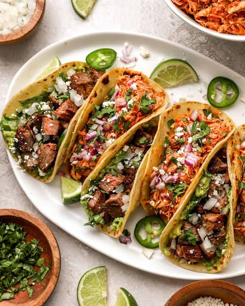
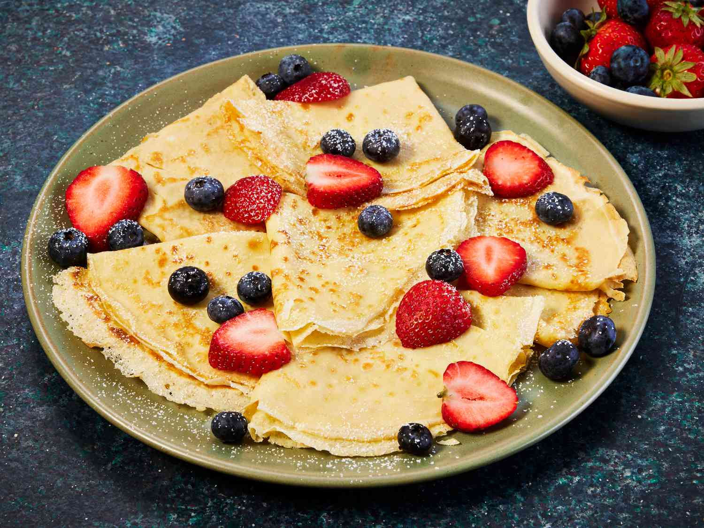

Hi, I'm Sina! Today,I'm going to share of my favorite foods with you.

A taco (US: /ˈtɑːkoʊ/, UK: /ˈtækoʊ/, Spanish: [ˈtako]) is a traditional Mexican dish consisting of a small hand-sized corn- or wheat-based tortilla topped with a filling. The tortilla is then folded around the filling
and eaten by hand. A taco can be made with a variety of fillings, including beef, pork, chicken, seafood, beans, vegetables, and cheese, and garnished with various condiments, such as salsa, guacamole, or sour cream,
and vegetables, such as lettuce, coriander, onion, tomatoes, and chiles.[1] Tacos are a common form of antojitos, or Mexican street food, which have spread around the world.
Tacos can be contrasted with similar foods such as burritos, which are often much larger and rolled rather than folded; taquitos, which are rolled and fried; or chalupas/tostadas, in which the tortilla is fried before filling.

A crêpe is a thin French pancake made from a simple batter of flour, eggs, milk, and butter. It can be served with sweet fillings such as fruit, chocolate, and sugar, or with savory ingredients like cheese, ham, and vegetables.
Crêpes are popular in France and are enjoyed as a breakfast, dessert, or light meal.
| Food | Serving | Calories | Protein | Total Fat | Carbs | ||
|---|---|---|---|---|---|---|---|
| Taco | 1taco | ~300 kcal | ~16 g | ~18 g | ~23 g | ||
| Crêpes | 1crêpes | ~160 kcal | ~6 g | ~6 g | ~20 g | ||
| Total Calories | ~460 | Total Protein | ~22 g | Total fat | ~24 g | Total Carbs | ~43 g |